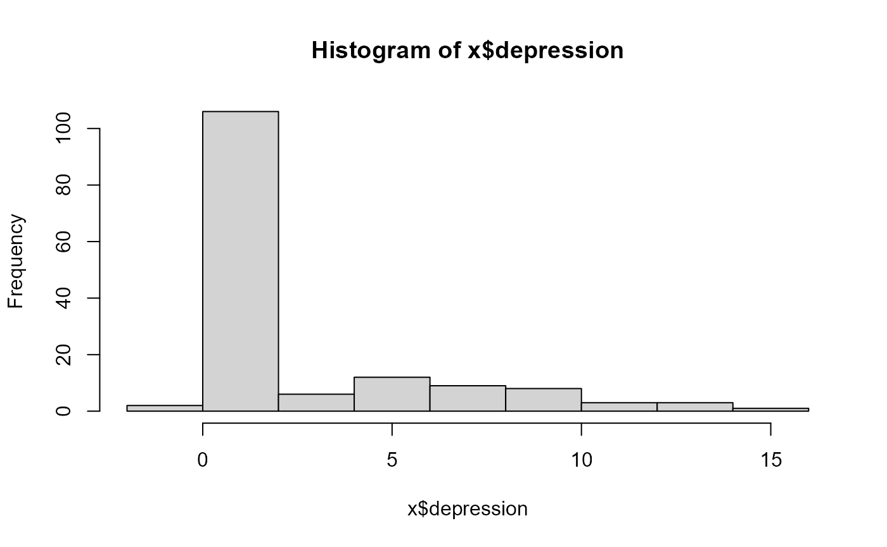
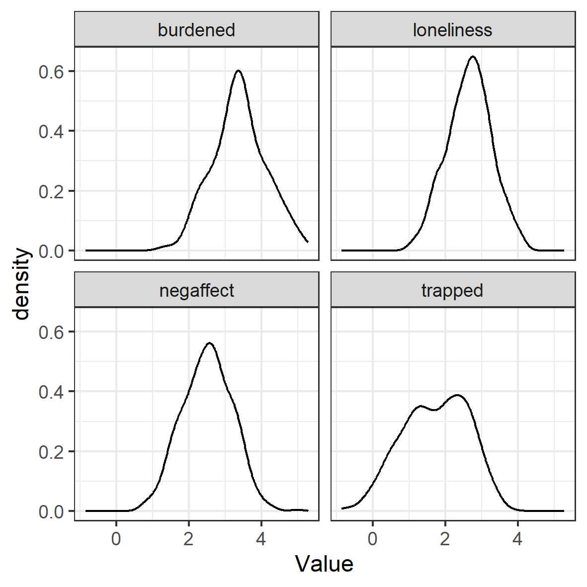
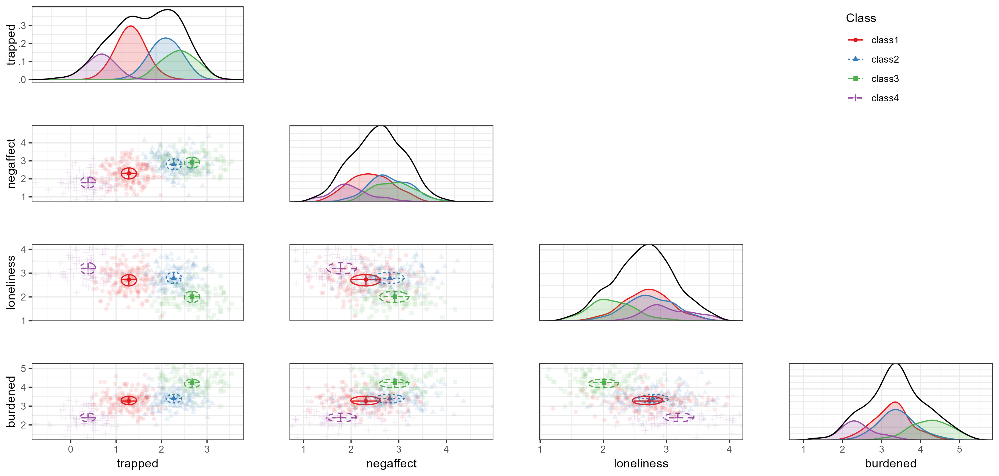
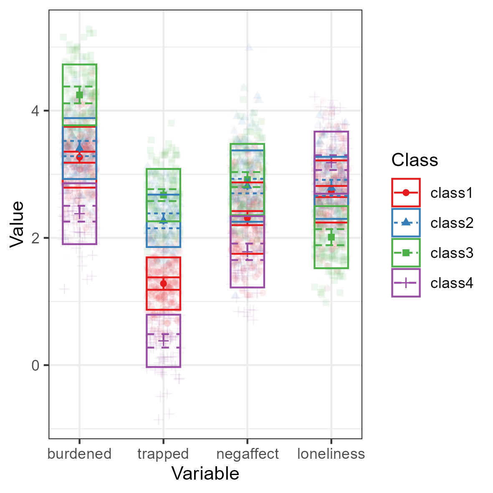

When theory makes specific predictions about the number of latent classes, or even their parameter values - a confirmatory use of LCA is in order.
This vignette explains confirmatory Latent Class Analysis (LCA) using
tidySEM, as discussed in Van Lissa, C. J.,
Garnier-Villarreal, M., & Anadria, D. (2023). Recommended
Practices in Latent Class Analysis using the Open-Source R-Package
tidySEM. Structural Equation Modeling..
Example 1: Depression
For example, suppose that clinical psychological theory proposes the existence of two subpopulations:
- people without depression
- people with depression
If all we know is people’s depression score, then we can try to identify two latent classes, corresponding to these subpopulations. Suppose that the theory further specifies that a depression score of about 10 or higher is required to count as depressed. We will use this theory to formulate two increasingly specific hypotheses:
- a two-class model should fit better than a one-class model. Adding a third class should not significantly improve fit.
- the class means should be close to 0 for the non-depressed class and 10 for the depressed class.
The second hypothesis is considerably stronger because it constrains the class-specific means to exact values.
Simulate example data
We first create a simple dataset containing a single continuous depression score.
library(tidySEM)
library(OpenMx)
set.seed(123)
x <- data.frame(depression = c(rnorm(50, mean = 6, sd = 4), rbeta(100,
2, 3)))
hist(x$depression)
Test the number of classes
The first confirmatory hypothesis concerns class
enumeration. Theory predicts two classes, so we estimate one-,
two-, and three-class solutions. Note that some analyses take along time
to run. For computationally intensive analyses like this, it is
convenient to save the results to a file using saveRDS(),
so you can load the results from that file directly without having to
wait for the code to run.
res <- mx_profiles(x, classes = 1:3)
saveRDS(res, "res_depression.rds")
res <- readRDS("res_depression.rds")
table_fit(res)
#> Name Classes LL n Parameters AIC BIC saBIC Entropy prob_min
#> 1 equal var 1 1 -398 150 2 801 807 800 1.00 1.00
#> 2 equal var 2 2 -347 150 4 701 713 701 0.95 0.94
#> 3 equal var 3 3 -315 150 6 642 660 641 0.97 0.96
#> prob_max n_min n_max np_ratio np_local
#> 1 1.00 1.00 1.00 75 75
#> 2 1.00 0.17 0.83 38 17
#> 3 0.99 0.12 0.72 25 14The fit table lets us inspect information criteria and other model-fit statistics across the competing class solutions.
If we want to test the theory, we can compare adjacent class solutions using the bootstrapped likelihood ratio test (BLRT).
res_blrt <- readRDS("blrt_depression.rds")
res_blrt
#> Bootstrapped Likelihood Ratio Test:
#>
#> null alt lr df blrt_p samples
#> mix1 mix2 103.5 2 0 65
#> mix2 mix3 63.2 2 0 94Translate theoretical assumptions into parameter constraints
The models above still allow all parameters to be estimated freely from the data. That tests only the broad hypothesis that two groups exist. The groups themselves could diverge substantially from what was theorized.
Our theory posits that the non-depressed class should have a mean near 0, whereas the depressed class should have a mean near 10 (technically, the minimum value in that class should be 10, but that’s a bit more difficult to enforce).
We can represent this stronger hypothesis by fixing the two class means to these values, or by e.g. setting a parameter constraint for the two classes.
First, create the two-class profile model without estimating it and examine its parameters:
res_theory <- mx_profiles(x, classes = 2, run = FALSE)
omxGetParameters(res_theory)The relevant mean parameters are m11 and
m21. We can either fix these means to the exact values of 0
and 10:
res_theory <- omxSetParameters(res_theory, labels = c("m11",
"m21"), values = c(0, 10), free = FALSE)Or alternatively, we could set a lower and upper bound for these parameters, thus allowing bounded free estimation:
res_theory_bounds <- omxSetParameters(res_theory, labels = c("m11",
"m21"), values = c(0, 10), free = TRUE, lbound = c(NA, 10),
ubound = c(1, NA))Now, run your chosen model:
Next, compare the unconstrained two-class solution with the theory-constrained model.
compare_these <- list(baseline = res[[2]], theory = res_theory,
theory_bounds = res_theory_bounds)
table_fit(compare_these)We can also compare the models using the BLRT:
blrt_theory <- readRDS("blrt_theory.rds")
blrt_theory
#> Bootstrapped Likelihood Ratio Test:
#>
#> null alt lr df blrt_p samples
#> mix2 equal var 2 -44.1 -2 0.47 100Note that fixing the class means to exact values is a very strong assumption. In many real applications, theory may imply that class means should be near certain values rather than exactly equal to them. You can also manually specify start values, and then test if the estimated parameter values deviate significantly from these:
res_theory_starts <- omxSetParameters(res_theory, labels = c("m11",
"m21"), values = c(0, 10), free = TRUE)
res_theory_starts <- run_mx(res_theory_starts)
omxGetParameters(res_theory_starts)
wald_test(res_theory_starts, "m11 = 0; m21 = 10")Example 2: Caregiver Compass
For this next example, we will use simulated data are based on work by Zegwaard and colleagues, who sought to establish a typology of caregivers who support a close other receiving outpatient psychological care. Qualitative research among experts resulted in a theory postulating the existence of four types of caregivers (translated from the original Dutch):
Balanced
The balanced caregiver experiences relative balance between the costs and benefits of caring for a close other.
Imbalanced
The imbalanced caregiver experiences a precarious balance between the costs and benefits of caring for a close other.
Lonely
The lonely caregiver experiences a strong sense of isolation.
Entrapped
The entrapped caregiver strongly feels a sense of being entangled in responsibilities which are difficult to fulfill.
The goal of this confirmatory study was to validate this hypothesized
class solution in a sample of caregivers. A convenience sample was used,
with no prior sample size justification. To view the data documentation,
run the command ?tidySEM::zegwaard_carecompass in the R
console.
Loading the Data
To load the data, simply attach the tidySEM package. For
convenience, we assign the variables used for analysis to an object
called df. We first only use the four scales:
c("burdened", "trapped", "negaffect", "loneliness").
Descriptive statistics
We use tidySEM::descriptives() to describe the data
numerically. Because all scales are continuous, we select only columns
for continuous data to de-clutter the table:
desc <- tidySEM::descriptives(df)
desc <- desc[, c("name", "n", "missing", "unique", "mean", "median",
"sd", "min", "max", "skew_2se", "kurt_2se")]
desc| name | n | missing | unique | mean | median | sd | min | max | skew_2se | kurt_2se |
|---|---|---|---|---|---|---|---|---|---|---|
| burdened | 509 | 0.01 | 509 | 3.4 | 3.4 | 0.75 | 1.20 | 5.3 | 0.17 | -0.41 |
| trapped | 505 | 0.02 | 505 | 1.7 | 1.8 | 0.90 | -0.86 | 3.8 | -1.03 | -1.52 |
| negaffect | 506 | 0.01 | 506 | 2.5 | 2.5 | 0.69 | 0.71 | 5.0 | 0.08 | -0.38 |
| loneliness | 510 | 0.01 | 510 | 2.7 | 2.7 | 0.62 | 0.98 | 4.2 | -0.33 | -0.62 |
The table indicates two potential causes for concern: there is a
small percentage of missingness, and all variables have relatively high
kurtosis. Since there are some missing values, we can conduct an MCAR
test using mice::mcar(df). According to Hawkins’ test,
there is no evidence to reject the assumptions of multivariate normality
and MCAR,
.
Missing data will be accounted for using FIML.
Additionally, we can plot the data. The ggplot2 function
geom_density() is useful for continuous data. Visual
inspection confirms the conclusions from the descriptives()
table: the data are kurtotic (peaked).
df_plot <- df
names(df_plot) <- paste0("Value.", names(df_plot))
df_plot <- reshape(df_plot, varying = names(df_plot), direction = "long",
timevar = "Variable")
ggplot(df_plot, aes(x = Value)) + geom_density() + facet_wrap(~Variable) +
theme_bw()
Conducting Latent Profile Analysis
As all variables are continuous, we can use the convenience function
tidySEM::mx_profiles(), which is a wrapper for the generic
function mx_mixture() optimized for continuous indicators.
Its default settings are appropriate for LPA, assuming fixed variances
across classes and zero covariances. Its arguments are data
and number of classes. All variables in data
are included in the analysis, which is why we first selected the
indicator variables. As this is a confirmatory LCA, we do not follow a
strictly data-driven class enumeration procedure. We will set the
maximum number of classes
to one more than the theoretically expected number. We set a seed to
ensure replicable results.
set.seed(123)
res <- mx_profiles(data = df, classes = 1:5)This analysis should produce some messages about cluster initialization. These relate to the selection of starting values, which relies on the K-means algorithm and is not robust to missing data. The algorithm automatically switches to hierarchical clustering, no further action is required.
Class Enumeration
To compare the fit of the theoretical model against other models, we
create a model fit table using table_fit() and retain
relevant columns. We also determine whether any models can be
disqualified.
In this example, all models converge without issues. If, for example,
the two-class solution had not converged, we could use the function
res[[2]] <- mxTryHard(res[[2]]) to aid convergence.
Next, we check for local identifiability. The sample size is consistently reported as 513, which means that partially missing cases were indeed included via FIML. The smallest class size occurs in the 5-class model, where the smallest class is assigned 7% of cases, or 38 cases. This model has 28 parameters, approximately 6 per class. We thus have at least five observations per parameter in every class, and do not disqualify the 5-class model.
There are concerns about theoretical interpretability of all solutions, as the entropies and minimum classification probabilities are all low. However, in this confirmatory use case, we address this when interpreting the results.
fit <- table_fit(res) # model fit table
fit[, c("Name", "LL", "Parameters", "n", "BIC", "Entropy", "prob_min",
"prob_max", "n_min", "n_max", "np_ratio", "np_local")]| Name | LL | p | n | BIC | Entropy | p_min | p_max | n_min | n_max |
|---|---|---|---|---|---|---|---|---|---|
| equal var 1 | -2242 | 8 | 513 | 4534 | 1.00 | 1.00 | 1.00 | 1.00 | 1.00 |
| equal var 2 | -2031 | 13 | 513 | 4144 | 0.74 | 0.91 | 0.93 | 0.42 | 0.58 |
| equal var 3 | -1951 | 18 | 513 | 4015 | 0.78 | 0.89 | 0.91 | 0.19 | 0.54 |
| equal var 4 | -1916 | 23 | 513 | 3976 | 0.75 | 0.81 | 0.92 | 0.16 | 0.34 |
| equal var 5 | -1910 | 28 | 513 | 3995 | 0.76 | 0.64 | 0.92 | 0.08 | 0.34 |
Using ICs
the 4-class solution has the lowest BIC, which means it is preferred
over all other solutions including a 1-class solution and a solution
with more classes. Note that a scree plot for the BIC can be plotted by
calling plot(fit). Following the elbow criterion, a
three-class solution would also be defensible. The function
ic_weights(fit) allows us to compute IC weights; it
indicates that, conditional on the set of models, the 4-class model has
a posterior model probability of nearly 100%.
Using LMR tests
If we conduct LMR tests, we find that the tests are significant for all pairwise model comparisons, except for the 5-class model:
lr_lmr(res)| null | alt | lr | df | p | w2 | p_w2 |
|---|---|---|---|---|---|---|
| mix1 | mix2 | 10.2 | 5 | 0.00 | 0.82 | 0.00 |
| mix2 | mix3 | 5.3 | 5 | 0.00 | 0.44 | 0.00 |
| mix3 | mix4 | 4.1 | 5 | 0.00 | 0.14 | 0.00 |
| mix4 | mix5 | 1.6 | 5 | 0.05 | 0.03 | 0.04 |
Using BLRT tests
We can also use the BLRT test. As it is very computationally expensive, we will use a low number of replications here. In practice, one might use a much higher number (1000+) for published research. Keep in mind that the p-value of the BLRT is subject to Monte Carlo error; if it fluctuates when analyses are replicated or its value is very close to the critical threshold, consider increasing the number of replications.
To accelerate computations, we can use the future
package for parallel computing (see ?plan to select the
appropriate back-end for your system). To track the function’s progress,
we use the progressr ecosystem, which allows users to
choose how they want to be informed. The example below uses a progress
bar:
library(future)
library(progressr)
plan(multisession) # Parallel processing for Windows
handlers("progress") # Progress bar
set.seed(1)
res_blrt <- BLRT(res, replications = 100)| null | alt | lr | df | blrt_p | samples |
|---|---|---|---|---|---|
| mix1 | mix2 | 421.2 | 5 | 0.00 | 100 |
| mix2 | mix3 | 160.0 | 5 | 0.00 | 100 |
| mix3 | mix4 | 70.2 | 5 | 0.00 | 100 |
| mix4 | mix5 | 7.8 | 5 | 0.36 | 100 |
In sum, across all class enumeration criteria, there is strong support for a 4-class solution.
Optional: Alternative Model Specifications
In the case of confirmatory LCA, the theory would be refuted by strong evidence against the hypothesized model and number of classes. In the preceding, we only compared the theoretical model against models with different number of classes. Imagine, however, that a Reviewer argues that variance ought to be freely estimated across classes. We could compare our theoretical model against their competing model as follows. Note that we can put two models into a list to compare them.
res_alt <- mx_profiles(df, classes = 4, variances = "varying")
compare <- list(res[[4]], res_alt)
table_fit(compare)| Name | LL | Parameters | BIC | Entropy | prob_min | prob_max | n_min | n_max |
|---|---|---|---|---|---|---|---|---|
| mix4 | -1916 | 23 | 3976 | 0.75 | 0.81 | 0.92 | 0.16 | 0.34 |
| free var 4 | -1909 | 35 | 4037 | 0.78 | 0.84 | 0.92 | 0.16 | 0.32 |
The alternative model incurs 12 additional parameters for the free variances. Yet, it has a higher BIC, which indicates that this additional complexity does not outweigh the increase in fit.
Interpreting the Final Class Solution
To interpret the final class solution, we first reorder the 4-class model by class size. This helps prevent label switching.
res_final <- mx_switch_labels(res[[4]])The 4-class model yielded classes of reasonable size; using
class_prothe largest class comprised 33%, and the smallest
comprised 16% of cases. However, the entropy was low,
,
indicating poor class separability. Furthermore, the posterior
classification probability ranged from
,
which means that at least some classes had a high classification error.
We produce a table of the results below.
table_results(res_final, columns = c("label", "est", "se", "confint",
"class"))| label | est | se | confint | class |
|---|---|---|---|---|
| Means.burdened.class1 | 3.27 | 0.04 | [3.18, 3.36] | class1 |
| Means.trapped.class1 | 1.28 | 0.05 | [1.18, 1.38] | class1 |
| Means.negaffect.class1 | 2.31 | 0.06 | [2.20, 2.42] | class1 |
| Means.loneliness.class1 | 2.73 | 0.04 | [2.64, 2.82] | class1 |
| Variances.burdened.class1 | 0.23 | 0.02 | [0.19, 0.27] | class1 |
| Variances.trapped.class1 | 0.17 | 0.02 | [0.14, 0.20] | class1 |
| Variances.negaffect.class1 | 0.31 | 0.02 | [0.27, 0.36] | class1 |
| Variances.loneliness.class1 | 0.24 | 0.02 | [0.20, 0.28] | class1 |
| Means.burdened.class2 | 3.40 | 0.06 | [3.28, 3.52] | class2 |
| Means.trapped.class2 | 2.27 | 0.06 | [2.15, 2.38] | class2 |
| Means.negaffect.class2 | 2.81 | 0.06 | [2.70, 2.93] | class2 |
| Means.loneliness.class2 | 2.79 | 0.06 | [2.66, 2.91] | class2 |
| Means.burdened.class3 | 4.25 | 0.07 | [4.12, 4.38] | class3 |
| Means.trapped.class3 | 2.67 | 0.05 | [2.58, 2.77] | class3 |
| Means.negaffect.class3 | 2.92 | 0.06 | [2.80, 3.03] | class3 |
| Means.loneliness.class3 | 2.01 | 0.06 | [1.89, 2.14] | class3 |
| Means.burdened.class4 | 2.38 | 0.06 | [2.26, 2.50] | class4 |
| Means.trapped.class4 | 0.38 | 0.05 | [0.28, 0.49] | class4 |
| Means.negaffect.class4 | 1.78 | 0.07 | [1.65, 1.91] | class4 |
| Means.loneliness.class4 | 3.18 | 0.06 | [3.07, 3.30] | class4 |
| mix4.weights[1,1].NA | 1.00 | NA | NA | NA |
| mix4.weights[1,2].NA | 0.86 | 0.15 | [0.56, 1.15] | NA |
| mix4.weights[1,3].NA | 0.66 | 0.11 | [0.44, 0.88] | NA |
| mix4.weights[1,4].NA | 0.47 | 0.08 | [0.32, 0.63] | NA |
The results are best interpreted by examining a plot of the model and
data, however. Relevant plot functions are
plot_bivariate(), plot_density(), and
plot_profiles(). However, we omit the density plots,
because plot_bivariate() also includes them.
plot_bivariate(res_final)
Bivariate profile plot
On the diagonal of the bivariate plot are weighted density plots: normal approximations of the density function of observed data, weighed by class probability. On the off-diagonal are plots for each pair of indicators, with the class means indicated by a point, class standard deviations indicated by lines, and covariances indicated by circles. As this model has zero covariances, all circles are round (albeit warped by the different scales of the X and Y axes)
The marginal density plots show that trappedness distinguishes classes rather well. For all other indicators, groups are not always clearly separated in terms of marginal density: class 2 and 3 coalesce on negative affect, 1 and 2 coalesce on loneliness, and 1 and 2 coalesce on burden. Nevertheless, the off-diagonal scatterplots show reasonable bivariate separation for all classes.
We can obtain a more classic profile plot using
plot_profiles(res_final). This plot conveys less
information than the bivariate plot, but is readily interpretable. Below
is a comparison between the most common type of visualization for LPA,
and the best-practices visualization provided by tidySEM.
Note that the best practices plot includes class means and error bars,
standard deviations, and a ribbon plot of raw data weighted by class
probability to indicate how well the classes describe the observed
distribution. The overlap between the classes is clearly visible in this
figure; this is why the entropy and classification probabilities are
relatively low.
Based on the bivariate plot, we can label class 1 as the balanced type (33%), class 2 as the imbalanced type (29%), class 3 as the entrapped type (22%), and class 4 as the lonely type (16%). Note however that the observed classes do not match the hypothesized pattern of class parameters exactly.
plot_profiles(res_final)
Profile plot
Predicting class membership
This LCA model was developed to help classify care providers in a
clinical context, so that mental healthcare professionals can provide
tailored support to those who take care of their clients. In
tidySEM, it is possible to predict class membership for new
data. Imagine that we administer the care compass questionnaire to a new
individual. We can assign their scale scores to a
data.frame, and supply it to the
predict_class() function (in previous versions, we
overloaded the predict() function) via the
newdata argument. The result includes the individual’s most
likely class, as well as posterior probabilities for all classes.
df_new <- data.frame(burdened = 2, trapped = 0.5, negaffect = 1.5,
loneliness = 4)
predict_class(res_final, newdata = df_new)